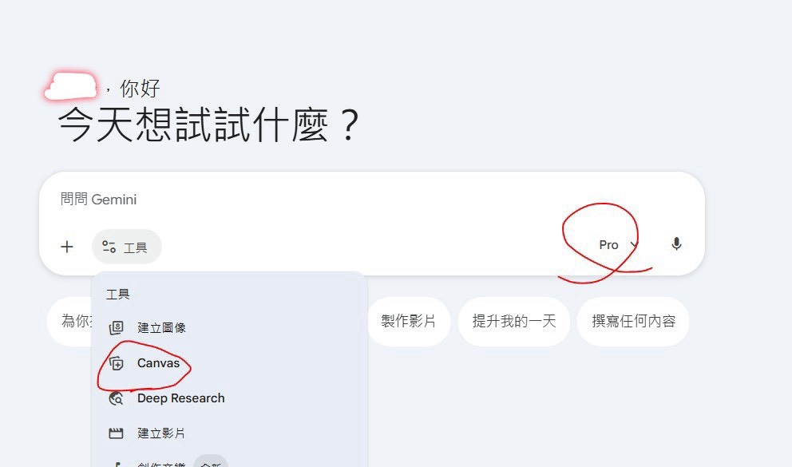
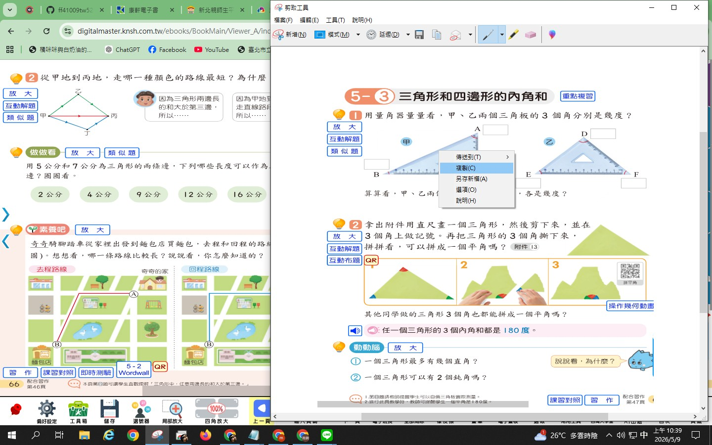
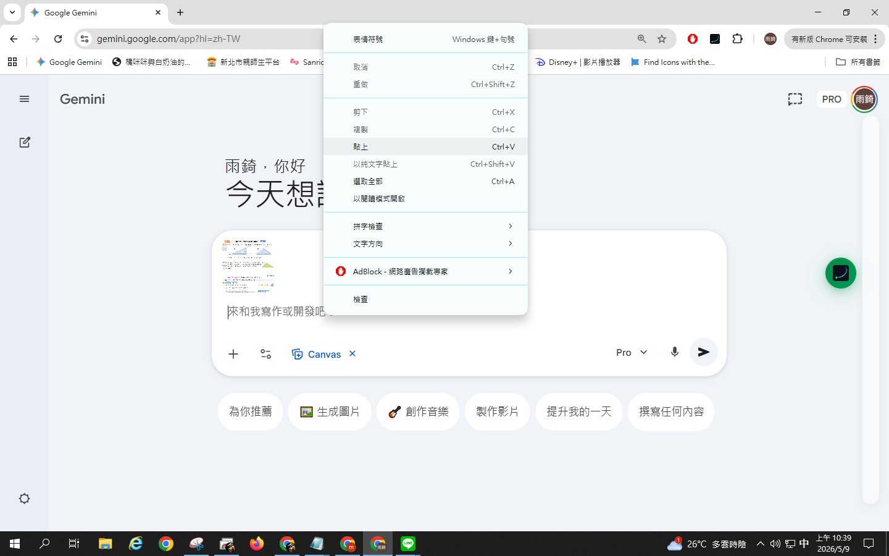
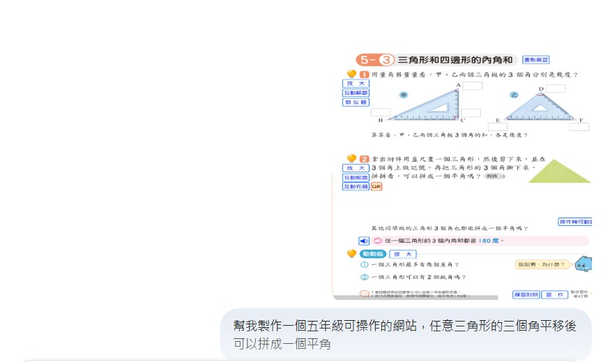
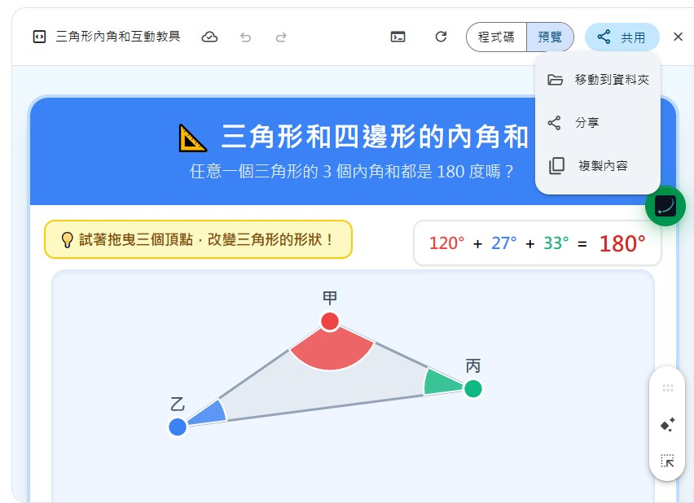
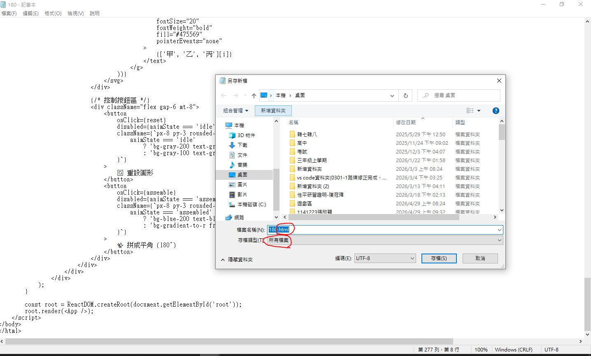
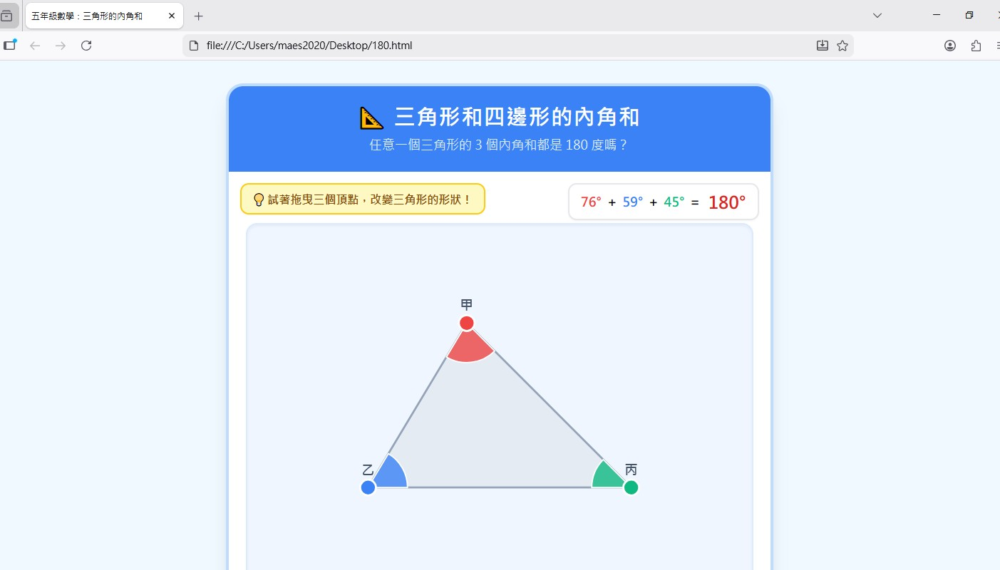

歡迎！讓我們開始製作互動教具
跟著圖文說明一步步做，把課本變成有趣的網頁！
1
開啟並設定 Gemini 工具

在開始對話前，我們要先讓 Gemini 準備好「網頁製作」的工具：
1
點擊輸入框旁邊的 「＋ 工具」，選擇 「Canvas」。（這樣生成的網頁才能在右側直接預覽喔！）
2
看右邊的思考模式下拉選單，如果可以的話請調整成 「Pro」。如果無法選擇 Pro，調整成「思考型」也可以。
設定好了嗎？請點擊右下角的「下一步」繼續！
2
把課本變成 AI 的眼睛

擷取電子書

貼上圖片
直接讓 AI 「看見」課本排版與圖形，溝通效率會比純文字高出數倍！
- 開啟您的數位電子書或教學 PDF 檔案。
- 使用 Windows 內建的「剪取工具」（鍵盤同時按下：
Win + Shift + S），將您想要數位化的單元內容截圖下來。 - 對選取的圖片按下「複製」。
- 回到 Gemini，在指令區按右鍵選擇「貼上」 (或按
Ctrl + V)，即可將圖片上傳給 AI。
3
向 AI 許願與反覆修改

圖片貼上後，文字就可以打上您的教學需求。
必備的三個關鍵字
我通常會打上：年級、可操作、製作網頁。
幫我製作一個五年級可操作的網站，任意三角形的三個角平移後可以拼成一個平角
不滿意？直接叫他改！
做完之後通常會不太滿意，這是正常的！您可以繼續跟 AI 談細節修改，例如說：「字體大一點」、「幫我加上角度的數字」，讓他越改越符合您的需求。
4
打包帶走：複製程式碼

當 AI 幫您把網頁做好了（在右側 Canvas 可以點擊預覽來測試），我們要將生成的程式碼直接做成網頁檔案。
- 請看畫面右上角，找到一個名叫 「共用」 的按鈕點下去。
- 在跳出來的選單中，點選最下方的 「複製內容」。
按下後，一整包的網頁程式碼就已經悄悄複製到您的滑鼠裡囉！
最關鍵的一步
5
神奇的存檔術 (變身網頁)

現在我們要用 Windows 內建的「記事本」來施展魔法：
1. 在電腦桌面產生一個 記事本 (文字文件) 並打開。
2. 將剛剛複製的內容 「貼上」 到裡面。
3. 點選左上角的「檔案」 > 「另存新檔」。
4. 注意！ 檔案名稱隨意，但後面一定要自己打上 .html （例如：180.html）。
5. 存檔類型一定要點開選單，改成 「所有檔案」，然後按下存檔。
常見問題防雷：
如果存檔後，桌面上的圖示還是「記事本」的圖案，代表失敗了喔！請重新檢查第 4、5 點，確認結尾有加上
如果存檔後，桌面上的圖示還是「記事本」的圖案，代表失敗了喔！請重新檢查第 4、5 點，確認結尾有加上
.html 且有選取「所有檔案」。
6
完成測試與分享給學生

存檔成功後，您的桌面上就會出現一個網頁檔案（圖示通常是 Chrome 或 Edge 瀏覽器的形狀）。
連續點擊兩下，就可以在這台電腦上開啟，並且親自滑鼠拖曳、操作剛剛生成的互動教具了！
帶到教室上課的方法
若要在教室的班級電腦開啟，非常簡單：
- 將這個檔案存到 USB 隨身碟 或上傳到雲端硬碟。
- 到教室後，把檔案複製到教室電腦的桌面上。
- 點擊兩下即可使用（就算教室沒有網路也能跑喔！）